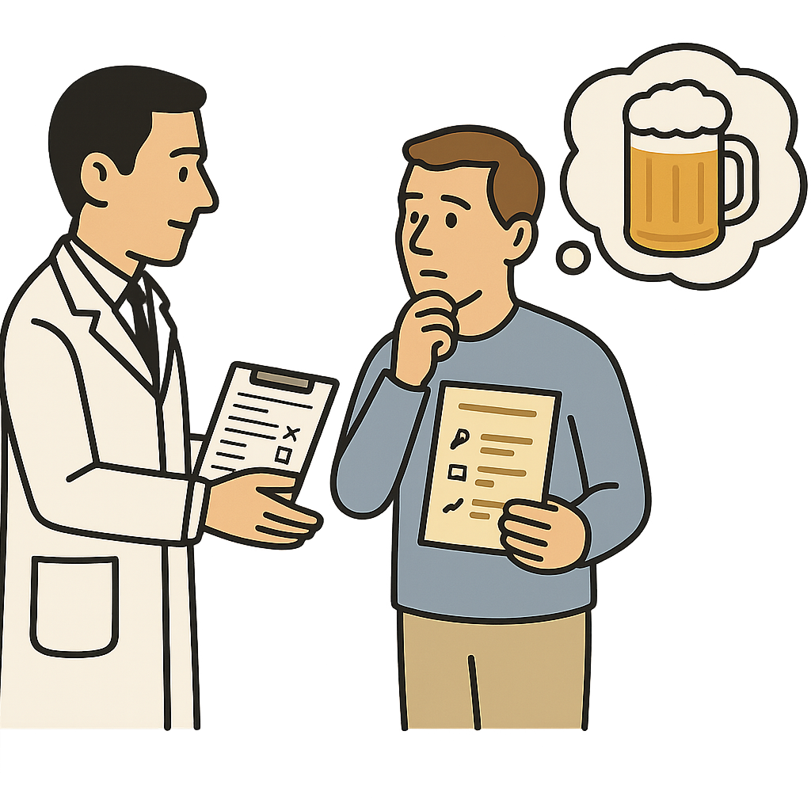
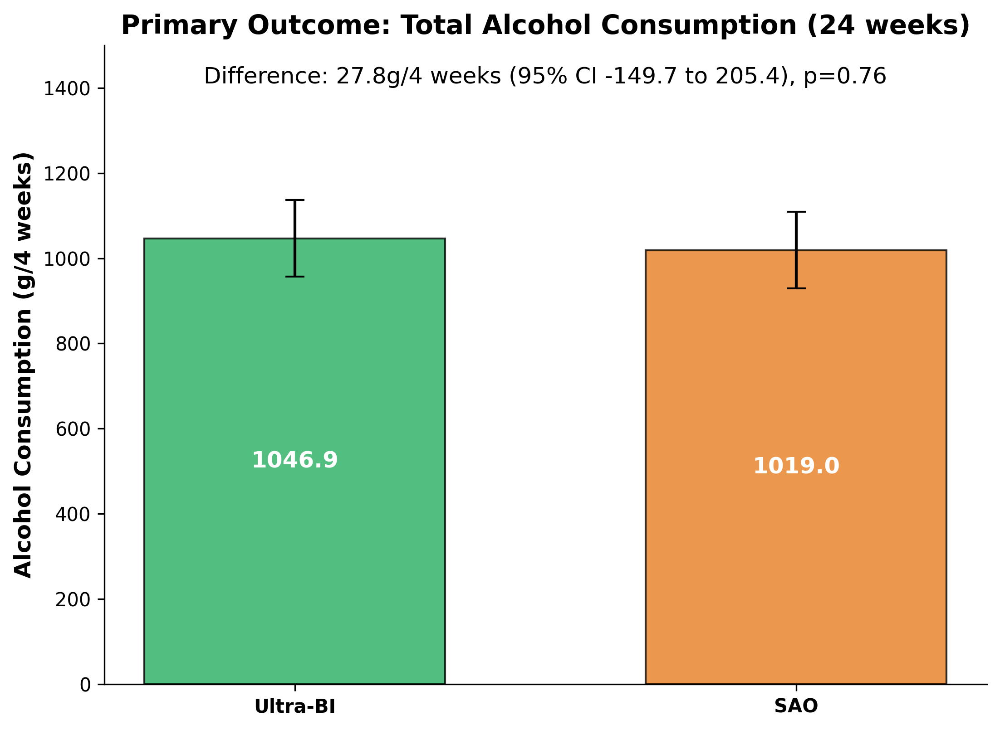

Effectiveness of screening and ultra-brief alcohol intervention in primary care:
a pragmatic cluster randomised controlled trial
❝
Summary
Ultra-BI did not significantly reduce alcohol consumption compared to SAO at 24 weeks follow-up.
📋
Study Design & Population
Pragmatic cluster RCT
No allocation concealment / Participants blinded to study hypothesis
Outpatients with AUDIT-C score ≥5 for men OR ≥4 for women
⚖️
Comparison
Ultra-Brief Intervention (Ultra-BI)
👨⚕️
21 clinics, 531 patients

Simplified Assessment Only (SAO)
📝
19 clinics, 602 patients
📊
Primary Outcome
